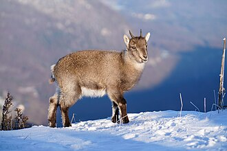
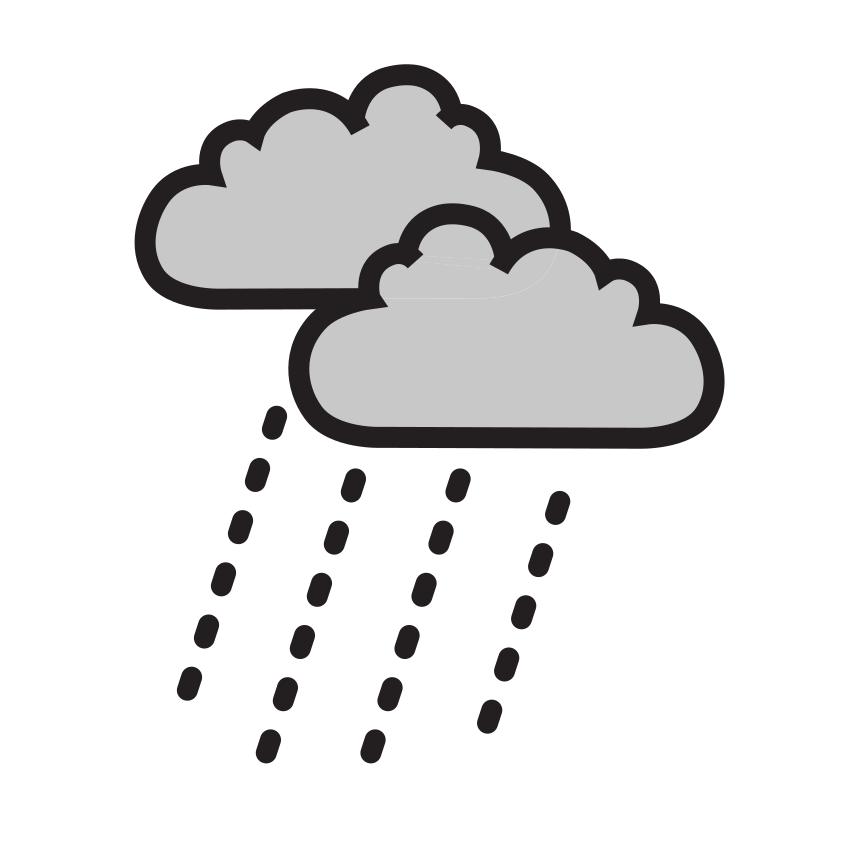
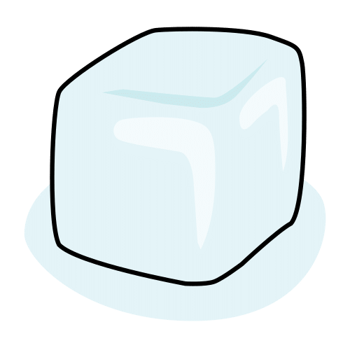
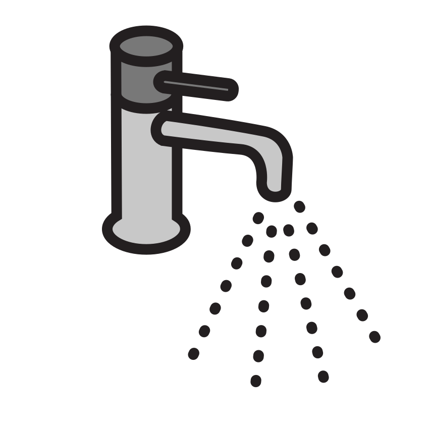
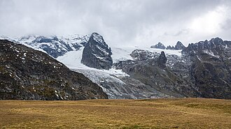
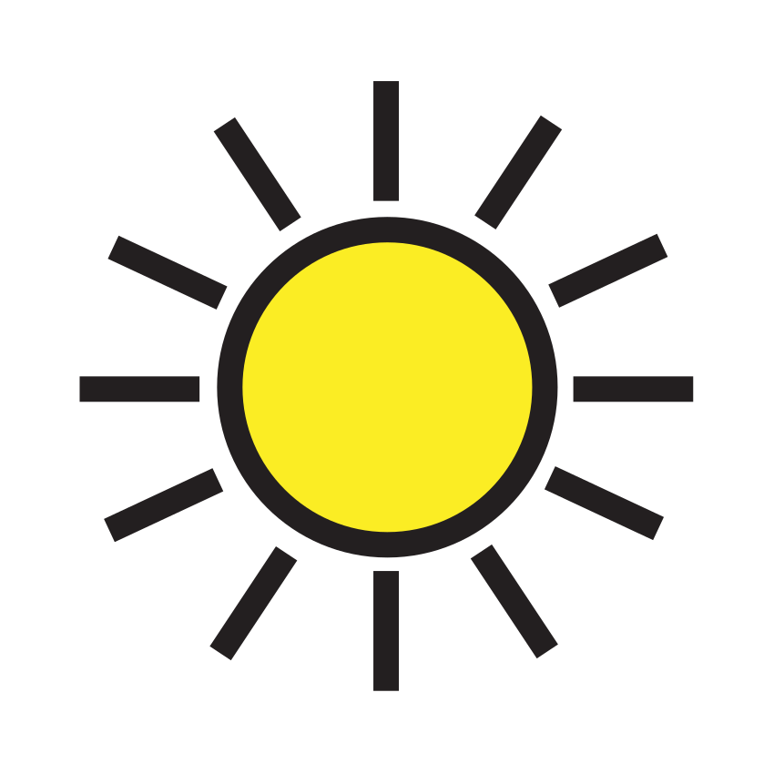

Consigne :1. Entoure les images où tu entends « o ». 2. Pour chaque image entourée, mets une croix dans la première case si tu entends « o » au début du mot, dans la dernière si tu l’entends à la fin. 3. Dans la bande, entoure toutes les lettres « o », dans les deux écritures.
1J’entoure quand j’entends [o].
flocon
luge
chamois
moto
sapin
vélo
2Où est le son [o] ? (début ◻ / fin ◻)
Image
Au début
À la fin
moto
vélo
chocolat (chaud)
3
O oO a o e o O c u o i O o
Compétence : identifier et localiser un phonème voyelle dans un mot.A ☐ · EC ☐ · NE ☐
Prénom : Date :
Période 3 · Fiche élève 2
Lettres — 3 graphies (éval. 3.4)
La cordée des lettres
Consigne :1. Chaque lettre part en cordée avec ses deux camarades : relie la lettre capitale, la lettre script et la lettre attachée. 2. Dans la bande, entoure toutes les lettres « m ».
1
A
L
O
M
S
U
s
a
m
o
u
l
cursive (main)
cursive (main)
cursive (main)
cursive (main)
cursive (main)
cursive (main)
2
M mm n M u m w M m n u m M
Compétences : associer les 3 graphies d’une lettre ; discriminer des lettres proches.A ☐ · EC ☐ · NE ☐
Prénom : Date :
Période 3 · Fiche élève 3
Écriture cursive (éval. 3.5)
Mon prénom en attaché
Consigne :1. Écris en suivant le modèle, plusieurs fois. 2. Écris les lettres que la maîtresse dicte. 3. Entoure ta plus belle ligne.
1
modèle : mon prénom en cursive (écrit à la main par la maîtresse)
modèle : la · le
modèle : il a
modèle : le lac
2
Compétence : écrire son prénom en cursive avec modèle ; enchaîner les lettres rondes.A ☐ · EC ☐ · NE ☐
Prénom : Date :
Période 3 · Fiche élève 4
Écrit — encodage (éval. 3.7)
J’écris des mots tout seul
Consigne :1. Dis le mot lentement, puis écris les lettres que tu entends, une lettre par case. Tu peux t’aider de l’alphabet de la classe. 2. Écris les syllabes que la maîtresse dicte. 3. Entoure le mot LUGE chaque fois qu’il est bien écrit.
1
MOTO
LAMA
VÉLO
Pour aller plus loin : j’écris MOUFLE (la maîtresse aide pour « OU »).
2
3
LUGELUGELUCELUGELGUELUGEIUGE
Compétences : encoder un mot transparent ; écrire des syllabes ; discriminer un mot.A ☐ · EC ☐ · NE ☐
Prénom : Date :
Période 3 · Fiche élève 5
Mathématiques — nombres ≤ 10 (éval. 3.8)
Les flocons par 10
Consigne :1. Repasse les chiffres gris puis écris-les tout seul à côté. 2. Chaque boîte doit contenir 10 flocons : dessine les flocons qui manquent et écris combien tu en as ajouté. 3. Complète : combien pour aller à 10 ?
1J’écris les chiffres.
1 2 3 4 5 6 7 8 9 10
2Je complète les boîtes de 10.
La boîte
J’ajoute et je compte
j’ai ajouté flocons
j’ai ajouté flocons
j’ai ajouté flocon
3
8 + = 10 · 6 + = 10 · 3 + = 10
Compétences : écrire les chiffres de 1 à 10 ; décomposer 10 ; compléments à 10.A ☐ · EC ☐ · NE ☐
Prénom : Date :
Période 3 · Fiche élève 6
Mathématiques — bande numérique (éval. 3.9)
Le télésiège des marmottes
Consigne :1. Écris les nombres qui manquent sur le télésiège. 2. La marmotte est sur le siège 4 et avance de 2 : colorie le siège d’arrivée. Le bouquetin est sur le 7 et recule de 2 : entoure son siège d’arrivée.
1Je complète la bande.
1
2
4
5
7
9
2Je colorie (marmotte : 4 → +2) et j’entoure (bouquetin

: 7 → −2).
1
2
3
4
5
6
7
8
9
10
3Je range du plus petit au plus grand.
9 · 2 · 6 · 10 · 4 →
★ Défi : écris le nombre juste avant et juste après : 6 — 9
Compétences : bande numérique jusqu’à 10 ; déplacements ; ranger des nombres.A ☐ · EC ☐ · NE ☐
Prénom : Date :
Période 3 · Fiche élève 7
Mathématiques — motifs évolutifs (éval. 3.13)
La frise des flocons qui grandit
Consigne :1. Regarde la frise et dessine la suite. 2. Dessine l’escalier suivant avec un carreau de plus.
1Je dessine la suite de la frise.
2Je dessine l’escalier suivant.
Compétence : poursuivre un motif évolutif et expliquer sa règle à l’oral.A ☐ · EC ☐ · NE ☐
Prénom : Date :
Période 3 · Fiche élève 8
Le monde — états de l’eau (éval. 3.14)
L’eau dure ou l’eau qui coule ?
Consigne :1. Entoure en bleu l’eau liquide (celle qui coule), en gris l’eau solide (celle qui est dure et gelée). 2. Dessine ce qui arrive au bonhomme de neige au soleil. 3. Coche OUI si c’est vrai, NON si c’est faux.
1J’entoure en bleu (liquide) ou en gris (solide).

la pluie

le glaçon
la neige

l’eau du robinet

le glacier
la goutte
2Le bonhomme de neige au soleil

: je dessine ce qui se passe.
3
Le glaçon fond quand il fait chaud.
OUI
NON
La pluie est de l’eau solide.
OUI
NON
Compétences : identifier l’état de l’eau ; représenter la fusion.A ☐ · EC ☐ · NE ☐
Crédits des images
Les illustrations de ce cahier sont des pictogrammes Mulberry Symbols (Paxtoncrafts Charitable Trust, licence CC BY-SA 4.0, mulberrysymbols.org) et des pictogrammes ARASAAC (auteur : Sergio Palao, propriété du Gouvernement d’Aragon, Espagne, licence CC BY-NC-SA, arasaac.org), complétés des images suivantes. Merci à leurs auteurs et autrices.
bouquetin : 021 Wild Baby Alpine Ibex Creux du Van Photo by Giles Laurent.jpg — Giles Laurent, licence CC BY-SA 4.0.
 flocon
flocon
 luge
luge
 chamois
chamois
 moto
moto
 sapin
sapin
 vélo
vélo

 : 4 → +2) et j’entoure (bouquetin
: 4 → +2) et j’entoure (bouquetin